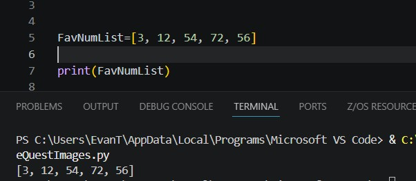
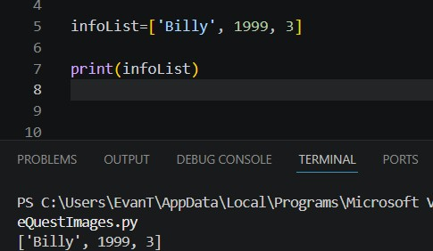
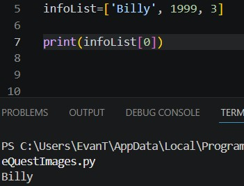

Lists are extremely useful in python, allowing you to hold important information that you don’t want to assign to a variable.
Lists are mutable objects that contain a series of items and can be declared by making your object = [].
Or, if you already have some things to put in there, can be set equal to [ item1, Item2, item3].
List without anything inside:
List with things inside:
For instance, you want to make a program that asks the user to give a list of their favorite numbers, the user might be weird and have a large amount of numbers they really like;
instead of making a variable for each, just store the values in a list.

One of the greatest things about lists is that the values stored in them don’t have to be the same datatype.
For example, this would allow you to hold the name, date of birth and favorite number all in one list!

You can access items in a list by doing list[1], one being the position of whatever you want to access.
If it is also important to note that lists start indexing at zero so if you try to get the first thing in the list, you actually write list[0].
